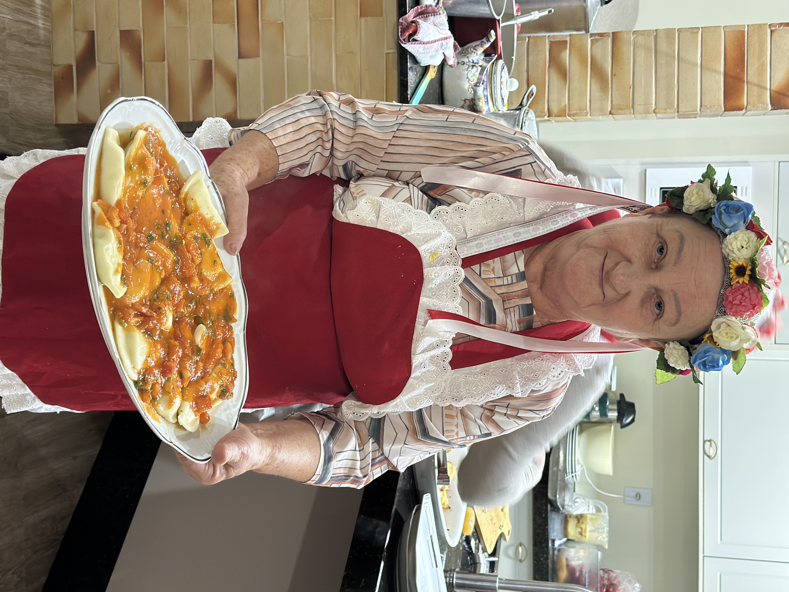
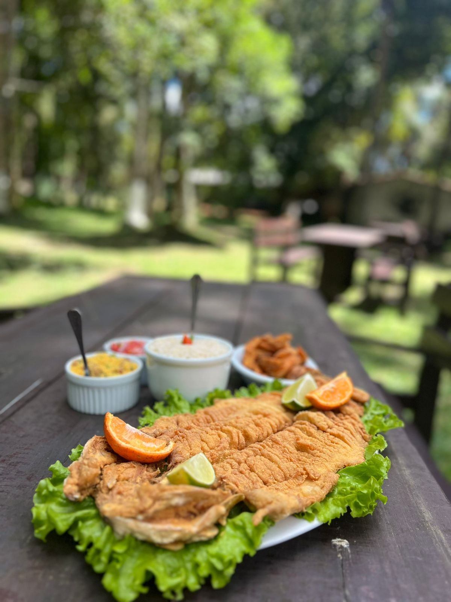
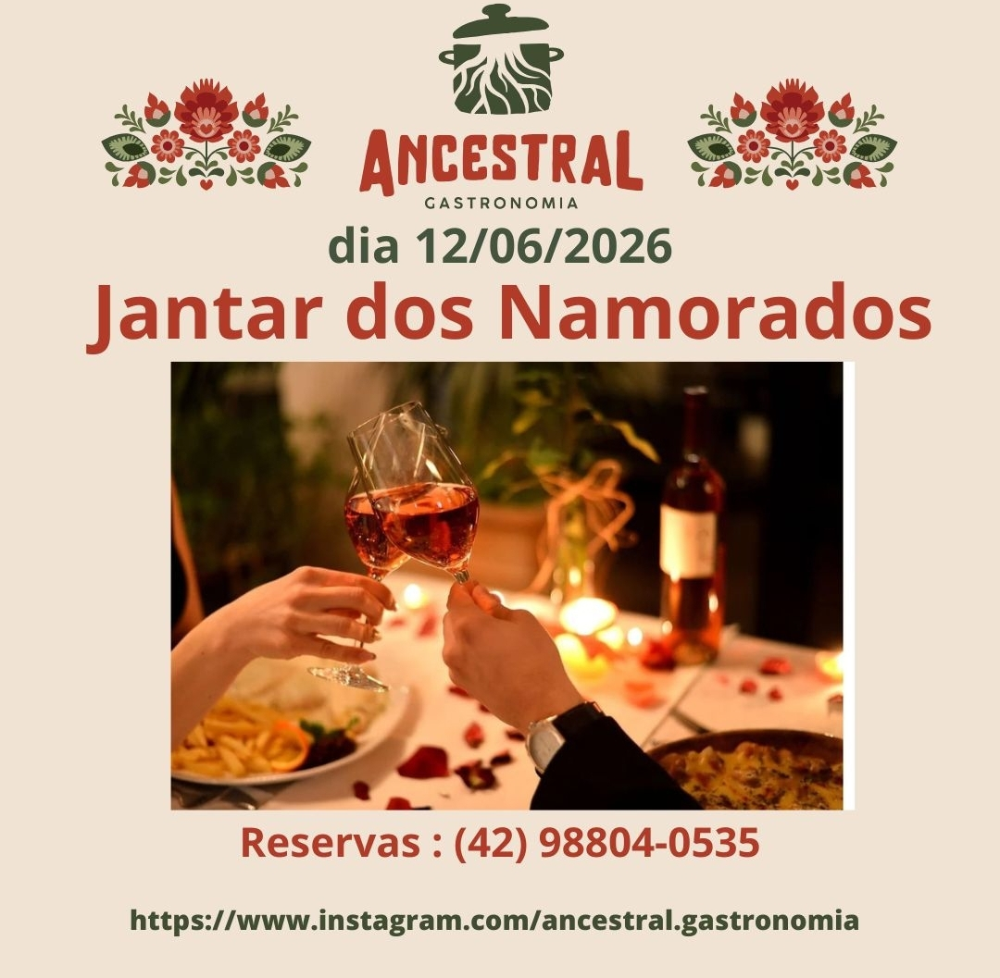
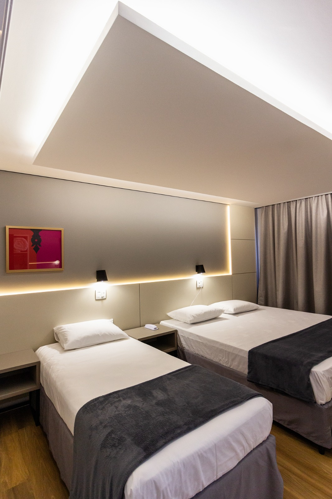
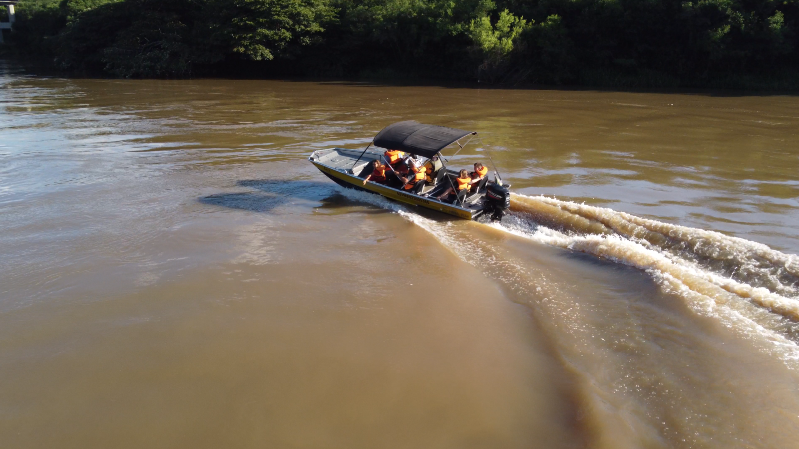
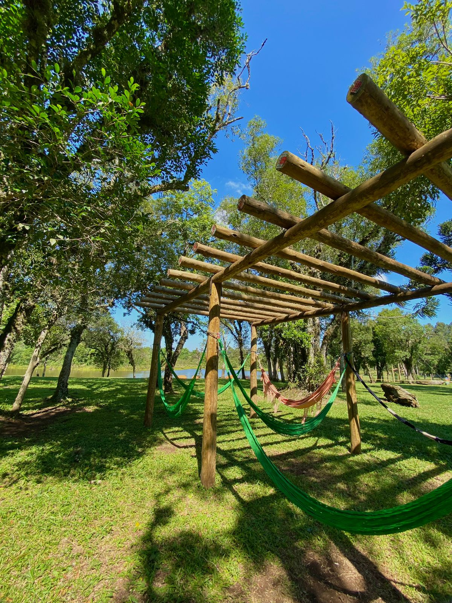
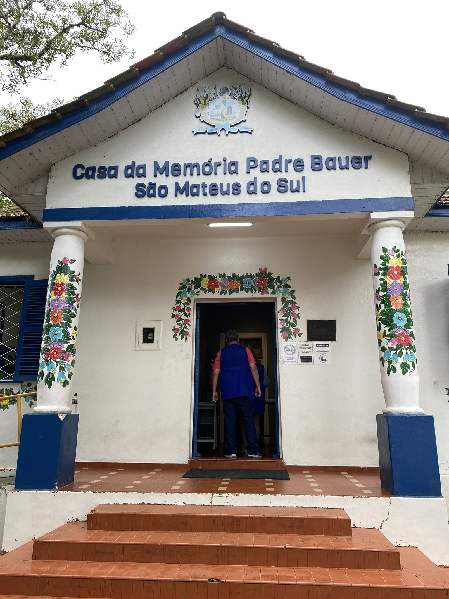

Gastronomia
Encontre pontos turísticos, rotas, gastronomia, hospedagem e eventos em um só lugar.
Imagens e lugares para inspirar seu roteiro por São Mateus do Sul.








Eventos, feiras e experiências para incluir no seu roteiro.
Carregando eventos...
Escolha uma categoria e monte seu roteiro pela cidade.
Comece pelas atrações principais e veja os locais cadastrados no mapa.
Abrir no mapaIgrejas, patrimônio, memória da imigração e referências culturais.
Abrir no mapaEncontre gastronomia, feiras e experiências ligadas ao mate.
Abrir no mapaPraças, paisagens, áreas de contemplação e pontos ligados ao rio.
Abrir no mapaVeja opções para montar a estadia junto do restante da visita.
Abrir no mapaCruze a programação da cidade com pontos e roteiros turísticos.
Abrir no mapaO mapa concentra atrações, rotas, gastronomia, hospedagem e eventos.
Abrir mapa completo Sabores locais Onde FicarPlaneje sua visita com informações rápidas, rotas, atrações e serviços essenciais.

Rotas rodoviárias, pontos turísticos e localização no Sul do Paraná.
Cultura polonesa, erva-mate, Rio Iguaçu, gastronomia e turismo rural.
Feiras, festas tradicionais e calendário cultural do município.
Departamento de Cultura e Turismo: (42) 3532-4163.
Conheça as duas maiores celebrações de São Mateus do Sul
O maior evento do município! Cinco dias de shows nacionais, feira gastronômica, exposição agropecuária, parque de diversões e o famoso Parque dos Dinossauros.
A magia do Natal na Capital Polonesa! Desfiles temáticos, apresentações culturais, shows, decoração especial e a tradicional chegada do Papai Noel em família.
Banhada pelo lendário Rio Iguaçu, nossa cidade é o encontro harmonioso entre a cultura polonesa centenária, a força da erva-mate nativa e a inovação tecnológica do xisto.
De um simples pouso de tropeiros ao título de Capital Polonesa do Paraná, cada capítulo moldou a cidade única que somos hoje.

Tudo começou às margens do majestoso Rio Iguaçu. Inicialmente um pouso estratégico para tropeiros e tropas militares rumo a Guarapuava, o rio transformou-se na artéria vital da nossa cidade através do ciclo da navegação a vapor.

Somos, por lei estadual, a Capital Polonesa do Paraná. A grande maioria da nossa população descende dos corajosos imigrantes poloneses que cruzaram o Atlântico no século XIX em busca de uma nova vida.
Nossa força econômica vem da terra. Do "Ouro Verde" da erva-mate nativa às reservas de xisto betuminoso, São Mateus do Sul une tradição agrícola com inovação tecnológica de ponta.
Conheça os pontos turísticos que fazem de São Mateus do Sul um destino único

Arquitetura neogótica preservada há mais de século.
Ver mais →
Paisagens de tirar o fôlego e passeios de barco.
Ver mais →

Deck, playground e contemplação da natureza.
Ver mais →
Joia da arquitetura polonesa rural.
Ver mais →

Elegância do início do século XX.
Ver mais →
Capital da erva-mate.
Ver mais →
Fique por dentro das festas tradicionais, eventos culturais e novidades do turismo

A agenda oficial do festival ganhou regulamento público e reforça a preparação de uma das principais vitrines culturais e gastronômicas do município.

O recurso anunciado amplia a estrutura das fanfarras e fortalece a formação musical e a participação comunitária.

Ações articuladas na Incubadora Inova alinham prioridades e consolidam a organização da agenda turística do município.
Conforto e hospitalidade polonesa para sua estadia
Hotel tradicional no centro da cidade com quartos confortáveis e café da manhã colonial.
📍 Centro
Acomodações aconchegantes com atendimento familiar e localização privilegiada.
📍 Centro
Hospedagem com charme polonês, restaurante com pratos típicos e ambiente familiar.
📍 Centro
Experiência autêntica em fazendas e propriedades rurais com contato direto com a natureza.
📞 Consulte disponibilidade
📍 Área Rural
Estamos prontos para recebê-lo e tornar sua experiência inesquecível.
Chalé do Produtor
PRAÇA DO RIO IGUAÇU
Chalé do Produtor - Praça do Rio Iguaçu
São Mateus do Sul - PR
Atendimento ao Turista
Segunda a Sexta
08h00 às 12h00 e das 13h00 às 16h00
São Mateus do Sul / PR
Outono · clima ameno
Carregando previsão...
Carregando previsão...
Carregando previsão...